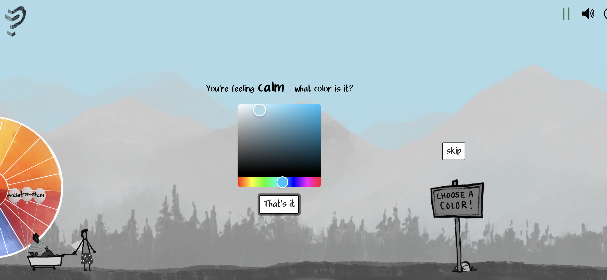
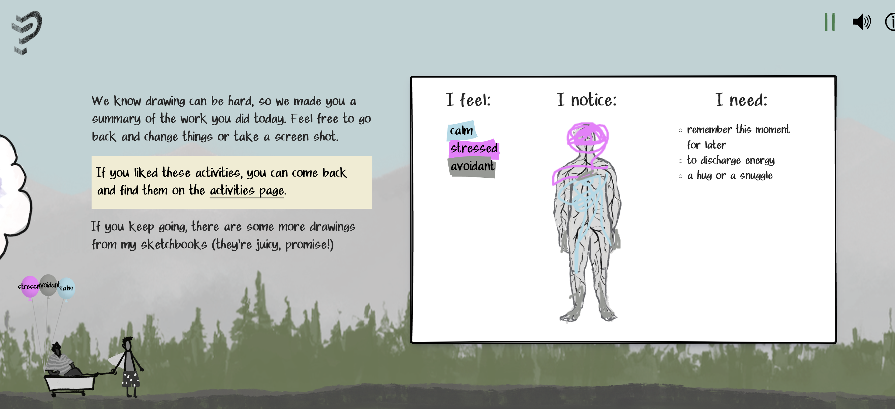
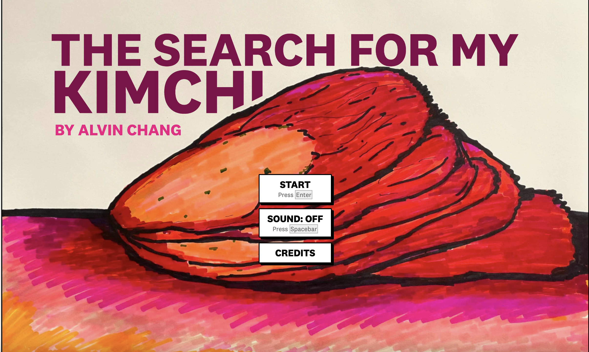
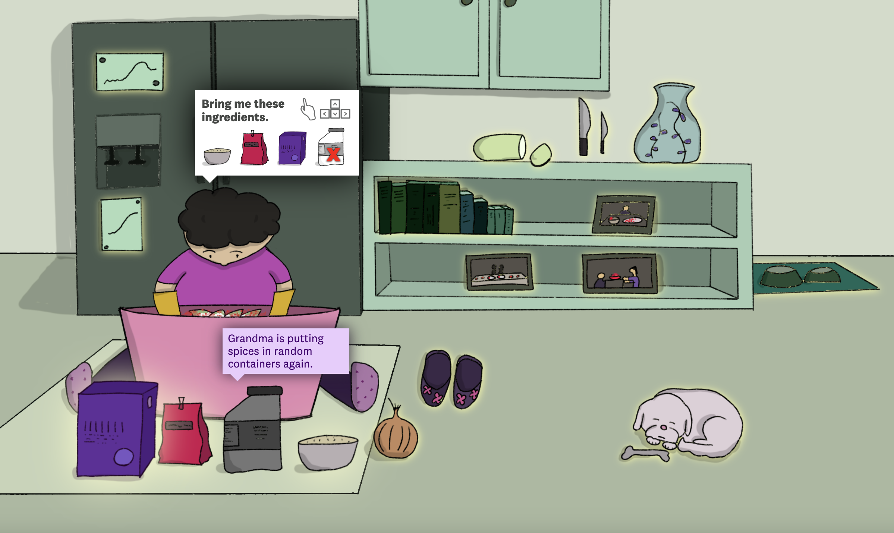

My capstone project will revolve around the topic of fashion. I have not yet settled on a solid plan but I want my project to be story driven and to include the viewer in the experience. In these examples I've found, both immerse the viewer.
How Are You Doing?

How Are You Doing takes form in a horizontal scroll that has the user identify their emotions and takes us through the journey of how the writer develops her own emotional awareness
In the image above the user is promted to pick a color with the associated emotion they are feeling. This ties back into the author having done this exercise themselves.
Here the user colors in the areas of where they are feeling their selected emotions. This further prompts the user to reflect more deeply on this subject.
I like how in this experience feels more like an activity for the user rather than for just feeling like I'm scrolling through a bunch of informational text. This approach feels effective in getting the point across to the user.
The Search for My Kimchi
This example takes an even more storytelling-forward approach. We are immersed and it is somewhere between reading from the author's perspective and then playing an online point and click game.
Inbetween sections where we read about context we get to participate in helping Alvin get the ingredients to make kimchi. There are many items the users can interact with that will also show fun facts and even data related to the subject. I really like this approach because the user drives what they discover and learn-- as opposed to a linear scroll where the author tells you want information to see in what order.
Conclusion
Both of these examples have a user-driven approach to move forward with the activity. This is something I would like to emulate in my own project. I think it makes the user care more about the topic and empathetic which is what I am aiming for in terms on reflecting on how we as a society have an overconsumption problem.